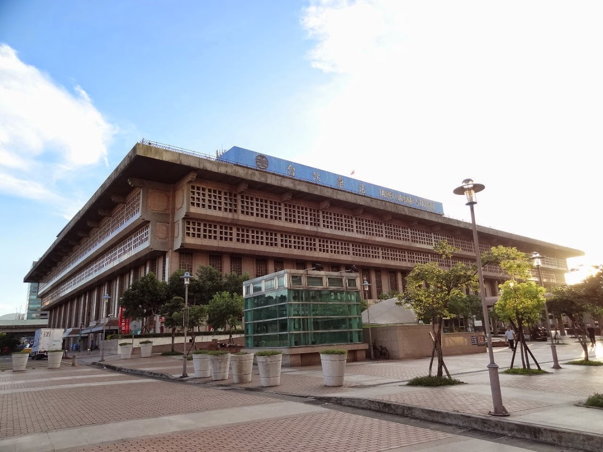
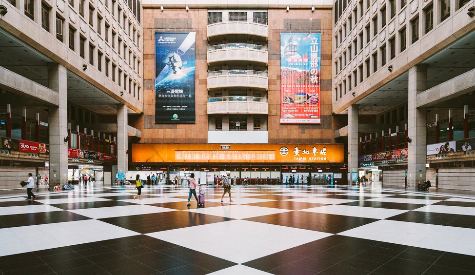

玖拾年代
台北車站-歷史簡介

車站概要
本站位在台北鐵道路網之地理中心，具有台北都市圈中央車站的地位，不但是臺北都會區與北臺灣首要的交通樞紐，也是全臺灣運量最大的鐵道車站，每日進出人次約52萬以上，長期穩坐臺鐵各車站總運量首位，總使用人次則居於世界第25名，僅次於位於日本的第1～23名以及位居第24名的法國巴黎北站。
“臺北車站於1891年（清光緒17年）10月20日設站，歷經多次遷移與改建後，現今站體啟用於1989年9月2日（參見「歷史」一段），臺灣鐵路管理局本部也設於此；隨著臺北捷運、台灣高鐵進駐之後，形成幅員廣闊的地下街區。車站周邊有商辦、補習班聚集的臺北站前商圈，若再連結臺北轉運站、捷運北門站、華山特區等周圍之「臺北車站特定區」設施，面積可達46.31公頃。”

小知識

車站構造
臺北車站車站主體為地上6層、地下4層、長149公尺、寬110公尺之建築，車站東、西兩側各有一座平面與地下停車場，南側為「站前廣場」。 一樓大廳東、西、南、北各有三個出入口，臺鐵售票處與列車動態顯示板（TIDS，主要使用電動告示牌）亦設於此。
“由於其龐大而複雜的站體結構在台灣非常少見，因此又被戲稱為「全台最大迷宮」，台鐵甚至為此研發導航APP。”
小知識